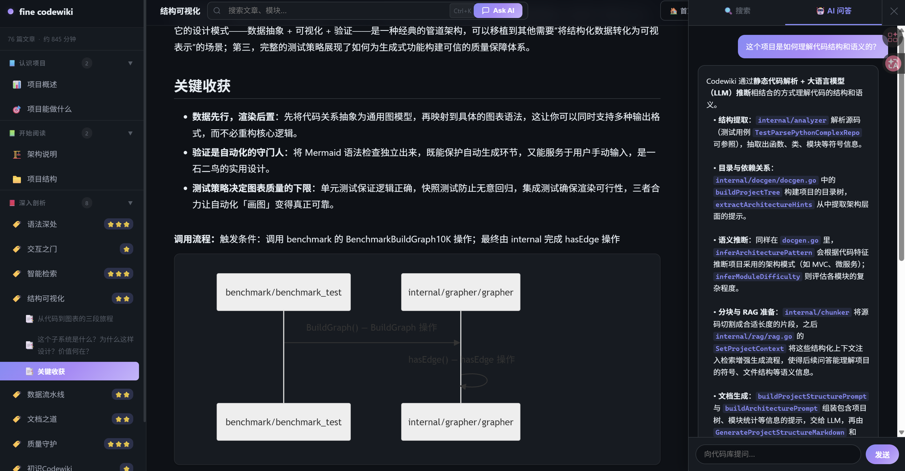
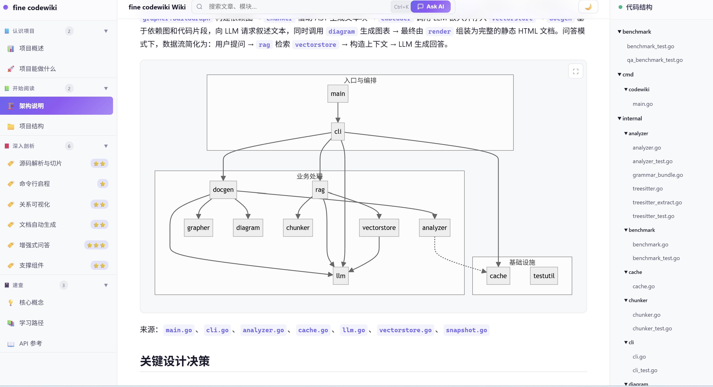
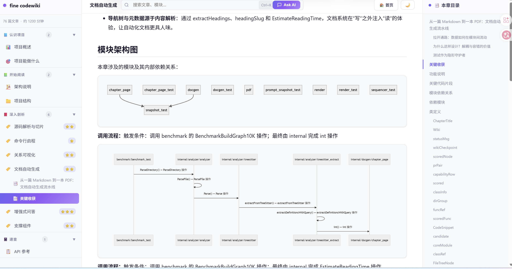

—— 打开陌生代码世界的认知之窗
fine codewiki 是一个纯本地 CLI 工具，将任意代码仓库自动转化为交互式 Wiki —— 架构图、类图、时序图一键生成，自然语言问答即问即答。 不是单纯的文档生成器，而是帮你读懂代码库的导师。代码永不出本机。
在 Google Code Wiki 和 Zread 之间，fine codewiki 开辟了第三条路 —— 可视化 + 纯本地 + 学习体验，一个都不少。
代码分析、文档生成、向量索引、RAG 问答，全链路在本地完成。源代码永不离开本机，安全敏感场景也可放心使用。
支持远程 API（OpenAI / Claude / Gemini / 智谱）和本地部署（Ollama / LocalAI）。轻量/中等/重型任务分层调度，流式优先，3 级渐进降级。
主题导向的叙事文档 —— 项目概述 / 能做什么 / 架构说明 / 核心概念 / 学习路径，而非冷冰冰的模块清单。关键设计决策显性化，按"概念→架构→实现"组织。
基于 AST 静态分析自动生成架构图、类图、时序图、依赖图。Mermaid DSL 纯文本格式，Git 友好。图表在叙事段落中自然穿插，支持全屏交互查看。
RAG 检索增强生成，用自然语言探索代码库。每个回答附带源文件路径与行号，支持多轮对话。双路检索策略，确保回答精准有据。
Go 语言编译为单一可执行文件，跨平台（macOS / Linux / Windows）。无需安装运行时、Docker、数据库，下载即用。
单二进制零依赖，下载即用。支持 macOS、Linux 和 Windows。
自动检测系统架构，安装到 PATH 目录
PowerShell 一键安装，自动配置环境
已有 Go 环境时最简洁的方式
纯本地运行，零配置，单二进制。所有操作都在你自己的机器上完成。
选择远程 API 或本地 Ollama 模型
交互式向导，引导完成 LLM 提供商、模型、API Key 等配置
AST 解析 → 依赖图 → LLM 叙事 → 图表
本地 Web 预览或终端提问
serve 启动本地 Web 预览；ask 支持直接提问或交互会话
从"结构说明书"到"学习百科"，fine codewiki 重新定义代码文档工具的标准。
运行 codewiki serve 即刻启动本地 Web 服务。左侧导航分层折叠、右侧内容区居中阅读、顶栏搜索 + Ask AI 快捷入口。磨砂玻璃态侧栏、阅读进度条、暗色主题 —— 不只是文档工具，更是精致的阅读体验。

基于 AST 静态分析提取精确结构，LLM 注入语义理解，生成可交互的 Mermaid 图表。架构图按功能域和技术层双图穿插叙事，图表支持全屏查看和点击导航到源码。不再是枯燥的节点列表，而是有因果链的叙事。

输入自然语言问题，fine codewiki 从代码图谱和文档索引中检索相关上下文，生成精确回答。每个答案都附带源码文件路径和行号，点击可直接弹出语法高亮的源码窗口。支持多轮对话，上下文持续保持。

我们在 Google Code Wiki 的可视化能力和 Zread 的学习体验之间找到了最佳平衡点。
| 能力维度 | Google Code Wiki | Zread | fine codewiki |
|---|---|---|---|
| 图表生成 | ✓ 架构图 / 类图 / 时序图（3 种） | ✓ 架构图等可视化 | ✓ 4 种图表 + 全屏交互 + 点击跳转源码 |
| 分析方式 | ✗ 纯 LLM，无 AST 结构提取 | ✗ 纯 LLM，无 AST 结构提取 | ✓ AST 静态分析 + LLM 语义生成 精确结构提取 + 设计意图推断，双重互补 |
| AI 文档生成 | ✓ Gemini 驱动，自动生成 | ✓ 多模型可选，叙事式 Wiki | ✓ 5 篇叙事文章 + 设计决策显性化 + 学习路径 |
| AI 问答 | ✓ NotebookLM 集成 | ✓ 对话式问答 | ✓ RAG 代码级问答 + 源码溯源 + 多轮对话 |
| 运行方式 | ✗ 云端，代码需上传 | ✓ 本地 CLI | ✓ CLI 生成 + 本地 Web 浏览双模 |
| 本地 LLM | ✗ 仅云端 Gemini | ✗ 仅远程 API | ✓ 远程 API 或 Ollama 本地部署，自由切换 |
| 离线导出 | ✗ 不支持 | ✗ 不支持 | ✓ 静态 HTML 三栏布局，可提交 Git |
| 语言支持 | ✗ 仅英文输出 | ✓ 中 / 英文 | ✓ 中 / 英文双语文档 + 7 种编程语言解析 |
| 模型开放性 | ✗ 绑定 Gemini | 智谱/OpenAI/MoonShot 等 5 家 | ✓ 任意兼容 OpenAI 接口的模型（含私有部署） |
| 开源 | ✗ 闭源 | ✗ 闭源 | ✓ MIT 开源 |
fine codewiki 独有优势： 依赖图 + 社区检测分层架构图 · PageRank 模块重要性排序 · 流式优先 LLM + 3 级渐进降级 · 4 阶段并发管线（2–5min） · 磨砂玻璃态 Web UI + 暗色主题 · 阅读进度 / 时长 / 难度徽章 · 图表点击导航到源码 · 模块中文名称智能生成 · 增量缓存（文件级 mtime/size 去重） · 时序图调用链追踪
从 AST 解析到 LLM 调用，从图表 DSL 到向量检索，每一层都经过精密设计。